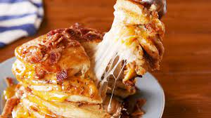

Gardās siera pankūkas ar zaļumiem

Gardas brokastu pankūkas ar sieru un zaļumiem sāļu uzkodu cienītājiem. Ar skābu krējumu garšo izcili!
Sastāvdaļas
- 200 g miltu
- 300 ml piena
- 150 g siera
- 1/2 tējk. sodas
- 3 ēd. k. augu eļļas
- 2 olas
- 1 buntīte zaļumu
- pēc garšas sāls
Pagatavošana
- Bļodā ber miltus, pievieno rīvētu sieru, pienu, sodu, sāli, eļļu, olas un kapātus zaļumus. Ja vēlas, var pierīvēt pāris ķiploka daiviņas uz smalkās rīves.
- Maisa, līdz iegūta vienmērīgas konsistences mīkla.
- Mīklu ar kausiņu lej uz viegli ietaukotas pannas, apcep pankūkas zeltainas no abām pusēm.
- Siera-zaļumu pankūkas pasniedz ar vēsu skābo krējumu. Labu apetīti!